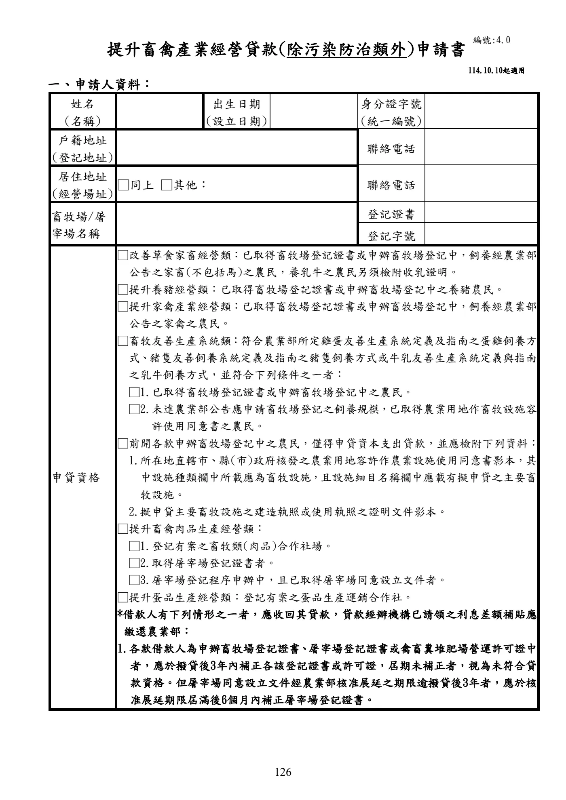

提升畜禽產業經營貸款
手冊頁：126 PDF頁：128／359
{kind=link}

展開查看PDF原始文字層
複雜表格欄列可能因文字層順序失真，請搭配原頁預覽查閱。
提升畜禽產業經營貸款(除污染防治類外)申請書 一、申請人資料： 姓名 (名稱) 出生日期 (設立日期) 身分證字號 (統一編號) 戶籍地址 (登記地址) 聯絡電話 居住地址 (經營場址) □同上 □其他： 聯絡電話 畜牧場/屠 宰場名稱 登記證書 登記字號 申貸資格 □改善草食家畜經營類：已取得畜牧場登記證書或申辦畜牧場登記中，飼養經農業部 公告之家畜(不包括馬)之農民，養乳牛之農民另須檢附收乳證明。 □提升養豬經營類：已取得畜牧場登記證書或申辦畜牧場登記中之養豬農民。 □提升家禽產業經營類：已取得畜牧場登記證書或申辦畜牧場登記中，飼養經農業部 公告之家禽之農民。 □畜牧友善生產系統類 ：符合農業部所定雞蛋友善生產系統定義及指南之蛋雞飼養方 式 、 豬隻友善飼養系統定義及指南之豬隻飼養方式或牛乳友善生產系統定義與指南 之乳牛飼養方式，並符合下列條件之一者： □1.已取得畜牧場登記證書或申辦畜牧場登記中之農民。 □2.未達農業部公告應申請畜牧場登記之飼養規模 ， 已取得農業用地作畜牧設施容 許使用同意書之農民。 □前開各款申辦畜牧場登記中之農民，僅得申貸資本支出貸款，並應檢附下列資料： 1.所在地直轄市、縣(市)政府核發之農業用地容許作農業設施使用同意書影本，其 中設施種類欄中所載應為畜牧設施 ， 且設施細目名稱欄中應載有擬申貸之主要畜 牧設施。 2.擬申貸主要畜牧設施之建造執照或使用執照之證明文件影本。 □提升畜禽肉品生產經營類： □1.登記有案之畜牧類(肉品)合作社場。 □2.取得屠宰場登記證書者。 □3.屠宰場登記程序申辦中，且已取得屠宰場同意設立文件者。 □提升蛋品生產經營類：登記有案之蛋品生產運銷合作社。 *借款人有下列情形之一者，應收回其貸款，貸款經辦機構已請領之利息差額補貼應 繳還農業部： 1.各款借款人為申辦畜牧場登記證書 、 屠宰場登記證書或禽畜糞堆肥場營運許可證中 者，應於撥貸後3年內補正各該登記證書或許可證，屆期未補正者，視為未符合貸 款資格。但屠宰場同意設立文件經農業部核准展延之期限逾撥貸後3年者，應於核 准展延期限屆滿後6個月內補正屠宰場登記證書。 編號:4.0 114.10.10起適用